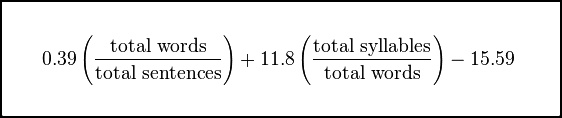

Concision.co is a text analyzer built for ease of use. All other free online text analysis programs are either bloated, filled with ads, not-actually-free, ugly, or otherwise unusable. Concision.co provides a lightweight, open-source solution.
Grade level is calculated according to the Flesch-Kincaid grade level formula.
I was unable to find a single text analysis site which was ad-free, client-side, not ugly, and not bloated.